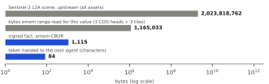
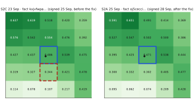
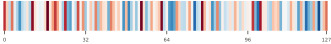
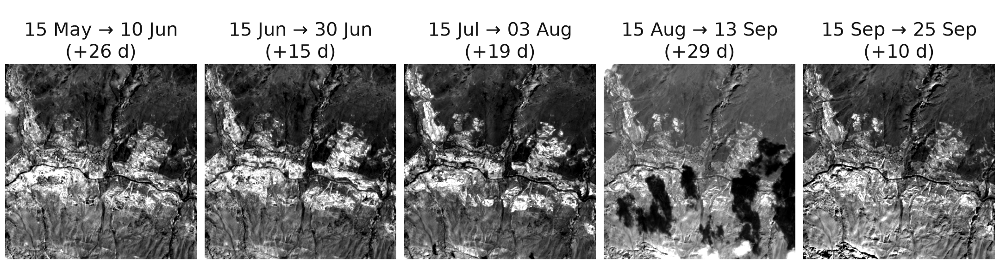
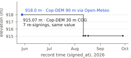
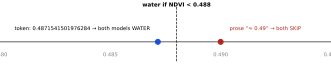

B receives a token that names the record’s bytes. emem stores each observation as a signed record named by the BLAKE3 hash of its own bytes. B fetches the bytes, re-hashes them, verifies the signed log entry and server receipt offline, and can walk the record back to the source pixel in the Sentinel-2 file.
Token: emem:fact:<cell>:<fact_cid>. cell = 64-bit id of a ≈10 m lat/lng grid cell (here ≈9.5 m N–S × 8.1 m E–W); fact_cid = base32(BLAKE3-256(record bytes, deterministic CBOR)). A token cited under the wrong cell returns HTTP 409.

By our reconstruction of its read path, emem range-reads 0.058 % of the scene to sign one NDVI value: three 64 KiB COG headers and one tile each of B04, B08 and SCL. It stores the 1,115-byte record, not the tiles. The next agent receives 84 characters (46 GPT-4 tokenizer tokens).
We hashed the Earth Search (AWS) copies of the B08 and B04 COGs into two signed pointer notes §2 §3: all 292 chunks of each (header + 291 tiles; 238.7 MB, 232.9 MB) under one Merkle root; the files stay on AWS. The tile holding the cell is emem:tree:khiqtqrddb6jponqn4gv72if7e#row=108 (row = leaf index); its 1,586,895 bytes hash to that row. These are not the Planetary Computer file the NDVI was read from (281.9 MB, offset not pre-subtracted), and emem records no hash of that file.
Earth Search serves the same tile with the offset already subtracted (B08 2502, B04 900); NDVI is identical. Sizes: Planetary Computer asset sizes (HTTP HEAD) and range reads, 30 Sep; the pointer notes and the 1,586,895-byte tile are Earth Search copies.
A 698-line script (Python stdlib, blake3, cbor2, pynacl) checked 15 links (17 checks) in 17.9 s, all verified. Grey: what must still be trusted after each check.
Links 1–5 and 12–14 fit in a 4,906-byte file (our format) that re-verifies 9 checks with networking disabled (unshare -rn) and lists the upstream byte ranges to re-read; a 1-bit tamper, a wrong cell or a wrong key fails it. research/repro/v8/trace_fact.py · verify_bundle.py · §22
| path | cid | re-hash | server sig. |
|---|---|---|---|
| REST · MCP (Streamable HTTP) · A2A JSON-RPC | oj5cecci | 3/3 | 3/3 |
| Python SDK · TypeScript SDK | oj5cecci | 2/2 | 2/2 ‡ |
| official MCP SDKs, LangChain MCP adapters, LlamaIndex tool | oj5cecci | 4/4 | 3/3 † |
| stock blake3 + cbor2 on the bytes | oj5cecci | 1/1 | — |
| same bytes from an untrusted mirror; tampered copy | j47f4xb3 | rejected |
3 repetitions each, 30 Sep 2026; value 0.4708994708994709 on every path. † the LlamaIndex tool drops the receipt. ‡ the TS SDK has no receipt verifier; ours was used. One responder (emem.dev) behind all paths: this shows client and protocol independence, not independent servers.

Re-reading the COGs named inside the signed records showed that the 23 Sep record §7 carries the DNs of the pixel 10 m south (dashed red: 2993/1972, SCL 5 bare soil, NDVI 0.3444). The pixel that contains the point (blue) reads 0.4860. emem had rounded the fractional pixel index; GDAL takes the floor. The fix shipped on 28 Sep §8.
| audit of pre-fix Sentinel-2 records | |
|---|---|
| random sample, one per cell, of pre-fix S2 records cited on emem.dev’s agent channel: 200 cells, 164 scenes, 19 bands (192 Element84, 8 Planetary Computer) | 200 |
| DNs match the rounded (neighbour) pixel, not the floor pixel | 162 · 81 % [75–86 %] |
| rounding and floor give the same pixel | 38 |
| DNs match the floor pixel where the two rules differ | 0 |
| ΔNDVI in emem’s signed change record at this cell, 23 → 25 Sep | +0.127 |
| ΔNDVI at the containing pixel | −0.015 |
Re-reading the pixel found the error; the signatures date it. No signed byte was rewritten: old tokens still resolve to exactly what was signed, so the error is reproducible and datable. Post-fix records (after 28 Sep) read the containing pixel. Wilson 95 % interval. Figure: ● query point, blue = pixel containing it, dashed red = pixel emem read. The offset is a reproducibility error, not a claim about geolocation accuracy.
| B = Claude Haiku 4.5 receives | B correct | B checked |
|---|---|---|
| A’s token | 10/10 | resolve, re-hash, receipt 10/10 |
| A’s own prose (16 digits) | 10/10 | nothing to check |
| prose rounded to “0.47” | 0/5 | — |
| token with a forged cell | 5/5 declined | refusal (MCP error; REST 409) |
A: Claude Sonnet 5.5 with emem as its only MCP server returned the exact token in 10/10 runs (mean 13 s, 3.3 tool calls; one prose misdated the scene 2025). Rule: irrigate if NDVI ≤ 0.4705, a threshold set on purpose 0.0004 below the value so that 2-decimal rounding flips it; it shows the mechanism, not a rate. Primary test, token vs full prose: 10/10 vs 10/10, a tie (p = 1). The rounded arm was added after A’s runs (exploratory): Fisher p = 0.0003. The pre-registered local Qwen2.5-3B as B (42 of 45 trials run) read 0.4709 from the token yet chose irrigate, 0/19 correct (full prose 10/18); on forged tokens it dropped the cell, resolved the bare id and acted: 0/5 declined.
Pre-registration hashed before trial 1 (research/repro/data/v8/prereg.md). Claude arms: one model family for A and B.
| counter (to 30 Sep 2026) | |
|---|---|
| calls to the 114 MCP tools | 96,728 |
| requests from Claude Code clients | 367,478 |
| UA contains “claude”, other (incl. ClaudeBot) | 41,080 |
| UA contains “openai” / “gpt” (incl. GPTBot) | 16,041 |
| requests from Perplexity | 2,701 |
| Smithery tool uses · uses of two Dify templates | 1,175 · 700 |
| PyPI ememdev · npm @vortxai/emem, last month | 314 · 304 |
Lifetime counters from an undocumented start, read 30 Sep 09:12Z; request = any HTTP request, call = one MCP tool invocation; not unique users. Claude Code includes our own sessions. 96.2 % of the 56,523 signed agent notes come from 9 operator keys; 229 other keys, some of them Vortx sessions, wrote at most 2,070. Dify lists the plugin; the ChatGPT app is submitted, listing not verified.

At the same cell, emem signs the 128-D TESSERA v1 (Cambridge; Sentinel-1 + Sentinel-2, 2024) embedding as a model_output record §9. Two range reads of the public product on Source Cooperative (128 B int8 + 4 B scale) give all 128 floats back with max |Δ| = 0; 4 of 4 facts tested match.
emem re-serves this product; it does not run the encoder, and emem’s resolve response says so (tamper_evidence: attester_only: only the signer vouches for the encoder step). Encoders emem did run, such as Clay v1.5 §10 (a Riyadh cell; now retired), record the BLAKE2b hash of the weights used.

An emem:cube: token §6 signs a list of five B08 raster records; each member states the date asked for and the scene used (+10 to +29 days later). The newest scene under 40 % scene cloud in the window is used, even when a clearer, nearer one exists (3 Aug at 12.6 % over 17 Jul at 6.9 %); there is no pixel mask.

Bengaluru, Copernicus DEM, one cell: 918.0 m from a 90 m source signed in May §12, 915.07 m (float32 as stored) after emem switched to the 30 m COG in August (§13, re-signed 28 Sep). Querying “as known on 15 Jun” returns 918.0; both records still re-hash. Absence is also a record: an ocean point with no DEM tile returns a signed “no tile here” record §15, distinct from an unsigned “could not look”.

| pre-registered, Gemma-4-12B + Qwen2.5-7B, one host | correct | agree |
|---|---|---|
| full context (control) | 72/72 | 36/36 |
| shared summary, compaction under pressure | 0/72 | 3/36 |
| shared summary, no pressure | 20/72 | 15/36 |
| wrong-but-agreeing pairs (3/36) exceed correct answers (0/72): Fisher one-sided p = 0.035 §17; handoff n = 20 per arm: prose 2, dense retrieval 8, BM25 20, token bundle 20 §18 | ||
The trap value 0.4871541501976284 §21 is the value observed 17 Jul and signed 18 Jul. It is a pre-fix read of the pixel south (section 3); the experiment tests fidelity to the cited value, not the ground. BM25 ties the bundle on short handoffs; the no-pressure arm is not significant (p = 0.109); six scoring bugs were found and corrected across two scorers. Related work: telephone-game drift (Perez et al., ICLR 2025), “Lost in Compaction” (arXiv 2608.11242), pointer-based compaction ARC (arXiv 2607.25066).
| what the agent is handed | integrity it carries |
|---|---|
| Planetary Computer: 281,898,500 B B08 COG URL | opaque ETag, no checksum |
| Copernicus Data Space: 1,187,971,637 B SAFE | MD5 + BLAKE3 of the whole product, unsigned |
| NASA Earthdata MCP: a granule concept id (an HLS granule, Bengaluru) | catalogue revision; older revisions return 404 |
| MCP tool results in general (spec 2026-07-28) | none; proposed in issue #3354 |
| emem: one value | BLAKE3 name of the 1,115-byte record, ed25519 receipt, log inclusion |
STAC and COG locate and read data; openEO and Earth Engine compute; emem names the exact value an agent cited so another agent can check it. emem does not yet store a hash of the upstream bytes (Source.hash is empty), so the upstream read is checked by re-reading the pixel, as in section 2.
Apache-2.0. pip install ememdev · npm i @vortxai/emem · agent-to-agent (A2A) card at emem.dev/.well-known/agent-card.json, signed.
| A signature says who served a value, not that it is true. |
| A fact_cid names one signed record; two signers of the same value mint different ids. |
| Place and object (entity) tokens are labels; only fact, raster, cube and tree tokens hash bytes; a bundle hashes a citation list. |
| A signed “no data” is a claim; no complete tile index backs it. |
| emem’s draft checker rejects “35 °C” citing a signed 28.0 °C §14, but it judges at the writer’s precision and allows “≈ 0.49”; it does not check band or unit. |
| Re-minting a raster yields a new token for identical pixels (signed_at is hashed). |
| One responder and one operator; the log co-signer is also Vortx AI. No read federation, no hardware attestation, nothing in orbit. |
| The agent experiments are single-host samples without independent replication. |
A file cannot contain its own hash, so this box is the only part of the board not inside the published bytes §1. Signed by the poster key njedkglt…; scripts to re-check everything without the viewer: research/repro/v8/.